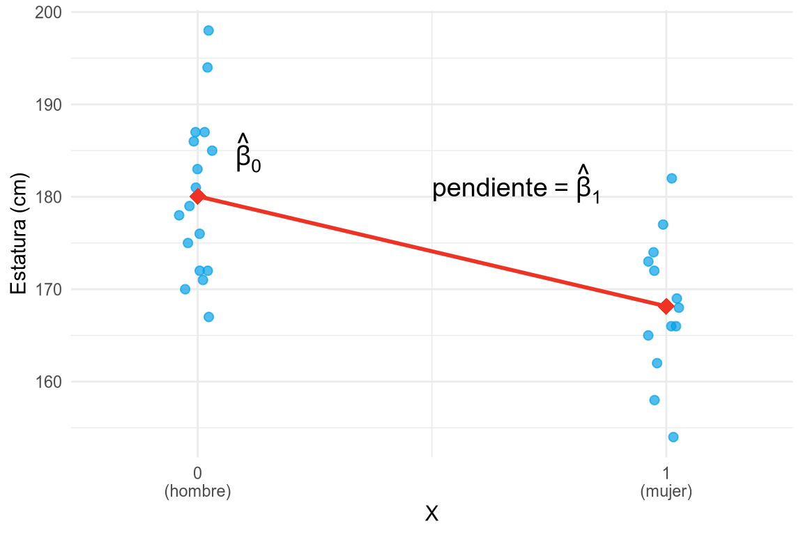
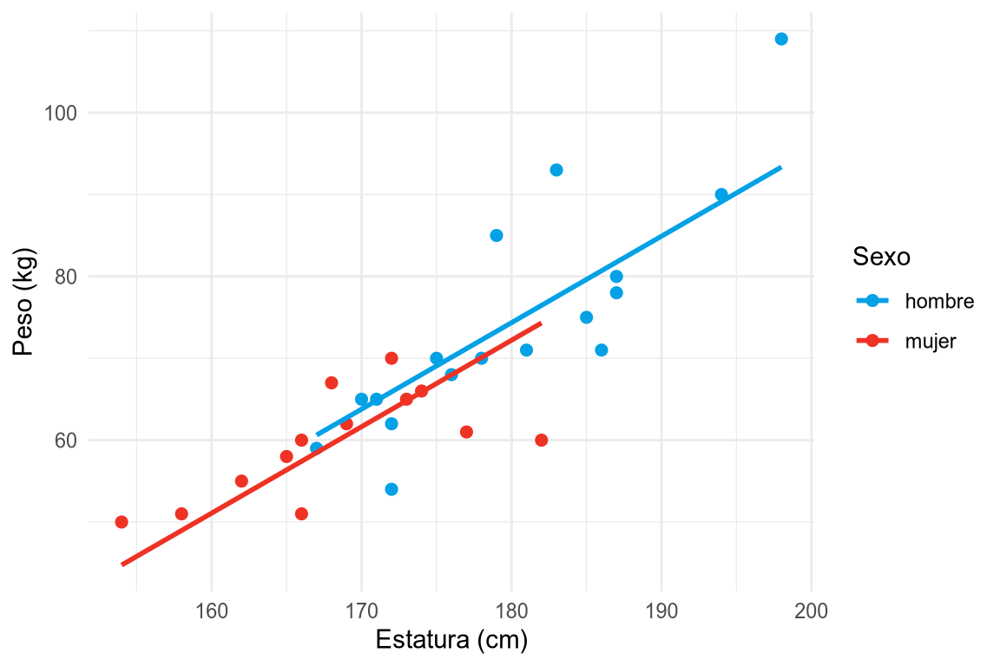

11 Modelos lineales generalizados
En los capítulos anteriores hemos estudiado un buen número de contrastes de hipótesis: el contraste para la media de una población, la comparación de medias de dos poblaciones con muestras independientes o pareadas, el contraste de correlación, el análisis de la varianza de uno o varios factores, el análisis de la covarianza, la comparación de proporciones o el contraste chi-cuadrado de independencia. Cada uno de ellos parece una herramienta distinta, con su propio estadístico, su propia distribución y sus propias condiciones de aplicación, lo que suele dar la impresión de que la estadística inferencial es un catálogo de recetas que hay que memorizar.
Sin embargo, casi todos estos contrastes son casos particulares de un mismo modelo: el modelo lineal. En este capítulo veremos que todos ellos pueden plantearse como un modelo de regresión lineal en el que la variable respuesta se explica a partir de una o varias variables explicativas, y que contrastar una hipótesis es, en el fondo, comparar dos modelos: uno más sencillo, en el que se cumple la hipótesis nula, y otro más complejo, en el que no se cumple. Finalmente, veremos cómo los modelos lineales generalizados extienden esta idea a variables respuesta que no siguen una distribución normal, como las variables dicotómicas o los recuentos, lo que permite incluir en el mismo marco los contrastes de proporciones y el contraste chi-cuadrado.
11.1 El modelo lineal
En el capítulo de regresión vimos cómo construir una recta \(y=a+bx\) que explicase una variable dependiente \(Y\) a partir de una variable independiente \(X\). Ahora vamos a generalizar esa idea para poder utilizar varias variables explicativas y, sobre todo, para poder hacer inferencia sobre la población a partir de la muestra.
Definición 11.1 (Modelo lineal) Un modelo lineal explica una variable respuesta cuantitativa \(Y\) a partir de \(k\) variables explicativas \(X_1,\ldots,X_k\) mediante la ecuación
\[ Y = \beta_0 + \beta_1 X_1 + \cdots + \beta_k X_k + \varepsilon, \]
donde \(\beta_0,\beta_1,\ldots,\beta_k\) son los parámetros o coeficientes del modelo, y \(\varepsilon\) es el error aleatorio, que recoge la parte de \(Y\) que no explican las variables explicativas.
Para cada individuo \(i\) de la muestra, el modelo establece que
\[ y_i = \underbrace{\beta_0 + \beta_1 x_{i1} + \cdots + \beta_k x_{ik}}_{\text{Modelo}} + \underbrace{\varepsilon_i}_{\text{Error}}, \]
es decir, que los datos se descomponen en una parte sistemática, explicada por el modelo, y una parte aleatoria o error:
\[ \text{Datos} = \text{Modelo} + \text{Error}. \]
Obsérvese que la recta de regresión \(y=a+bx\) no es más que el modelo lineal con una única variable explicativa, con \(\beta_0=a\) y \(\beta_1=b\). Como en la regresión, los parámetros del modelo se estiman a partir de la muestra mediante el método de mínimos cuadrados, es decir, buscando los valores \(\hat\beta_0,\ldots,\hat\beta_k\) que hacen mínima la suma de los cuadrados de los residuos
\[ SCE = \sum_{i=1}^n (y_i-\hat y_i)^2 = \sum_{i=1}^n (y_i - \hat\beta_0 - \hat\beta_1 x_{i1} - \cdots - \hat\beta_k x_{ik})^2. \]
Para poder hacer inferencia con el modelo se asume que los errores \(\varepsilon_i\) cumplen las siguientes condiciones:
- Independencia: los errores de los distintos individuos son independientes.
- Normalidad: los errores siguen una distribución normal de media 0.
- Homocedasticidad: todos los errores tienen la misma varianza \(\sigma^2\).
Es decir, \(\varepsilon_i\sim N(0,\sigma)\) independientes. Estas son, precisamente, las condiciones que se exigían en la prueba T y en el ANOVA, y no es casualidad.
11.1.1 Variables explicativas cualitativas: variables indicadoras
El modelo lineal solo admite variables explicativas numéricas, pero en muchos contrastes la variable explicativa es cualitativa, como el sexo, el grupo sanguíneo o el tratamiento recibido. Para incluirlas en el modelo se utilizan variables indicadoras.
Definición 11.2 (Variable indicadora) Dada una variable cualitativa \(G\) con \(k\) categorías \(g_1,\ldots,g_k\), se llaman variables indicadoras (o variables ficticias) de \(G\) a las variables \(X_2,\ldots,X_k\) definidas como
\[ X_j = \begin{cases} 1 & \mbox{si } G=g_j,\\ 0 & \mbox{si } G\neq g_j. \end{cases} \]
La categoría \(g_1\), que no tiene variable indicadora, se llama categoría de referencia.
Así, una variable con dos categorías se representa con una única variable indicadora que vale 0 en la categoría de referencia y 1 en la otra, y una variable con \(k\) categorías necesita \(k-1\) variables indicadoras. Como veremos, este sencillo truco es el que permite convertir las comparaciones de medias entre grupos en modelos de regresión.
11.2 Contrastes de hipótesis como comparación de modelos
Cualquier hipótesis sobre los parámetros de un modelo lineal puede plantearse como una comparación entre dos modelos (Judd et al. 2017):
- Modelo compacto (C): el modelo más sencillo, en el que se cumple la hipótesis nula. Por ejemplo, un modelo en el que algún parámetro vale 0.
- Modelo ampliado (A): el modelo más complejo, que incluye todos los parámetros del modelo compacto más algunos parámetros adicionales.
Como el modelo ampliado tiene más parámetros, siempre se ajusta a los datos al menos tan bien como el compacto, es decir, su suma de cuadrados de los residuos es menor o igual: \(SCE(A)\leq SCE(C)\). La pregunta que se plantea el contraste es si la reducción del error que se consigue con el modelo ampliado es suficientemente grande como para compensar su mayor complejidad, o si, por el contrario, puede atribuirse al azar del muestreo.
Definición 11.3 (Reducción proporcional del error) Dados un modelo compacto \(C\) y un modelo ampliado \(A\), se llama reducción proporcional del error a
\[ RPE = \frac{SCE(C)-SCE(A)}{SCE(C)} = 1-\frac{SCE(A)}{SCE(C)}. \]
La reducción proporcional del error siempre está entre 0 y 1. Vale 0 cuando los parámetros adicionales no reducen nada el error, y 1 cuando el modelo ampliado explica perfectamente los datos. Cuando el modelo compacto es el que no tiene más parámetro que la constante \(\beta_0\), la reducción proporcional del error coincide con el coeficiente de determinación \(r^2\) estudiado en el capítulo de regresión.
Para decidir si la reducción del error es significativa, hay que tener en cuenta cuántos parámetros se han añadido y cuántos datos quedan para estimar el error.
Teorema 11.1 (Contraste de comparación de modelos lineales) Sean \(C\) y \(A\) dos modelos lineales con \(p_C\) y \(p_A\) parámetros respectivamente, siendo \(C\) un caso particular de \(A\) (\(p_C<p_A\)), ajustados a una muestra de tamaño \(n\). Si se cumple la hipótesis nula de que los parámetros adicionales del modelo \(A\) son nulos, el estadístico
\[ F = \frac{(SCE(C)-SCE(A))/(p_A-p_C)}{SCE(A)/(n-p_A)} = \frac{RPE/(p_A-p_C)}{(1-RPE)/(n-p_A)} \]
sigue una distribución F de Fisher-Snedecor \(F(p_A-p_C,\, n-p_A)\).
La hipótesis nula se rechaza cuando \(F\) es grande, es decir, cuando la reducción del error por cada parámetro añadido es grande comparada con el error que queda sin explicar por cada grado de libertad. Cuando el modelo ampliado solo añade un parámetro \(\beta_j\), el contraste equivale a una prueba T para la hipótesis \(H_0: \beta_j=0\), con estadístico
\[ T = \frac{\hat\beta_j}{s(\hat\beta_j)}\sim T(n-p_A), \]
siendo \(s(\hat\beta_j)\) el error típico de la estimación, y se cumple que \(T^2=F\).
Este planteamiento único, comparar un modelo compacto con un modelo ampliado, es el que se esconde detrás de todos los contrastes que se presentan a continuación. Lo único que cambia de un contraste a otro son las variables explicativas que se incluyen en cada modelo.
11.3 Contraste para la media de una población
El modelo lineal más sencillo es el que no tiene ninguna variable explicativa:
\[ Y = \beta_0 + \varepsilon. \]
En este modelo, la predicción es la misma para todos los individuos, \(\hat y_i = \hat\beta_0\), y el valor de \(\hat\beta_0\) que minimiza la suma de cuadrados de los residuos es la media muestral \(\bar y\). Por tanto, \(\beta_0\) es la media poblacional \(\mu\), y el contraste para la media de una población normal con varianza desconocida, \(H_0: \mu=\mu_0\), consiste en comparar los modelos
\[ \begin{aligned} C&: Y = \mu_0 + \varepsilon, \\ A&: Y = \beta_0 + \varepsilon, \end{aligned} \]
lo que equivale a contrastar si \(\beta_0=0\) en el modelo \(Y-\mu_0 = \beta_0 + \varepsilon\).
Ejemplo 11.1 (Contraste para la media como modelo lineal) Se ha medido el nivel de colesterol (mg/dl) de una muestra de 20 personas, obteniendo una media de 214.50 mg/dl, y se quiere contrastar si el nivel medio de colesterol en la población es distinto de 200 mg/dl.
La prueba T para la media de una población, \(H_0: \mu=200\), da un estadístico \(t=3.7131\) con \(p\)-valor \(= 0.0015\).
Si ajustamos el modelo lineal \(Y-200 = \beta_0 + \varepsilon\), obtenemos \(\hat\beta_0=14.50\), que es precisamente \(\bar y - 200\), y el contraste \(H_0:\beta_0=0\) da un estadístico \(t=3.7131\) con \(p\)-valor \(= 0.0015\).
Ambos contrastes son exactamente el mismo, y la conclusión es que el nivel medio de colesterol es significativamente distinto de 200 mg/dl.
11.3.1 Muestras pareadas
Cuando se tienen dos medidas de la misma variable en los mismos individuos, como antes y después de un tratamiento, el contraste de comparación de medias de muestras pareadas se reduce a un contraste para la media de las diferencias \(D=Y_1-Y_2\). Por tanto, también es un modelo lineal sin variables explicativas:
\[ D = \beta_0 + \varepsilon, \]
donde \(\beta_0\) es la diferencia media poblacional, y el contraste \(H_0: \mu_1=\mu_2\) equivale a \(H_0: \beta_0=0\).
Ejemplo 11.2 (Muestras pareadas como modelo lineal) Para comprobar la eficacia de un fármaco antihipertensivo se ha medido la tensión arterial sistólica (mm Hg) de 12 pacientes antes y después del tratamiento. La prueba T para muestras pareadas da un estadístico \(t=2.8380\) con \(p\)-valor \(= 0.0161\). Si ajustamos el modelo lineal \(D=\beta_0+\varepsilon\) a las diferencias \(D=\text{Antes}-\text{Después}\), obtenemos \(\hat\beta_0=\bar d=9.25\) mm Hg, con estadístico \(t=2.8380\) y \(p\)-valor \(= 0.0161\), exactamente los mismos que con la prueba T.
11.4 Comparación de medias de dos poblaciones independientes
Para comparar las medias de una variable \(Y\) en dos poblaciones, se introduce en el modelo una variable indicadora \(X\) que vale 0 para los individuos de la primera población (la de referencia) y 1 para los de la segunda:
\[ Y = \beta_0 + \beta_1 X + \varepsilon. \]
Para los individuos de la primera población (\(X=0\)) el modelo predice \(\beta_0\), y para los de la segunda (\(X=1\)) predice \(\beta_0+\beta_1\). Por tanto,
- \(\beta_0 = \mu_1\) es la media de la primera población,
- \(\beta_1 = \mu_2-\mu_1\) es la diferencia entre las medias de las dos poblaciones,
y el contraste de comparación de medias \(H_0: \mu_1=\mu_2\) equivale al contraste \(H_0:\beta_1=0\), es decir, a comparar el modelo compacto \(Y=\beta_0+\varepsilon\), en el que ambas poblaciones tienen la misma media, con el modelo ampliado \(Y=\beta_0+\beta_1X+\varepsilon\).
Como la variable indicadora solo toma los valores 0 y 1, la recta de regresión pasa por las medias de los dos grupos, y su pendiente, que es lo que avanza la recta cuando \(X\) aumenta una unidad, es justamente la diferencia de medias.
Ejemplo 11.3 (Comparación de dos medias como modelo lineal) Se quiere comparar la estatura media de hombres y mujeres a partir de una muestra de 30 personas. Tomando como referencia a los hombres, la variable indicadora \(X\) vale 0 para los hombres y 1 para las mujeres. La figura muestra los datos y la recta de regresión ajustada.
La prueba T de comparación de medias de dos poblaciones con varianzas iguales da un estadístico \(t=3.9055\) con \(p\)-valor \(= 0.0005\).
Ajustando el modelo lineal se obtiene:
- \(\hat\beta_0=180.06\) cm, que es la estatura media de los hombres.
- \(\hat\beta_1=-11.90\) cm, que es la diferencia entre la estatura media de las mujeres y la de los hombres.
El contraste \(H_0:\beta_1=0\) da un estadístico \(t=-3.9055\) con \(p\)-valor \(= 0.0005\). El estadístico solo cambia de signo, porque en la prueba T se ha calculado la diferencia hombres − mujeres y en el modelo mujeres − hombres, pero el \(p\)-valor es exactamente el mismo.
Cuando no puede suponerse que las varianzas de las dos poblaciones son iguales, se utiliza el mismo modelo, pero permitiendo que la varianza del error sea distinta en cada grupo, lo que se consigue ajustando el modelo por mínimos cuadrados ponderados. Este modelo es equivalente al contraste de comparación de medias con varianzas distintas (prueba de Welch).
11.5 Contraste de correlación y regresión lineal simple
Cuando la variable explicativa \(X\) es cuantitativa, el modelo
\[ Y = \beta_0 + \beta_1 X + \varepsilon \]
es el modelo de regresión lineal simple que ya conocemos. La pendiente \(\beta_1\) mide cuánto cambia la media de \(Y\) por cada unidad que aumenta \(X\), y el contraste \(H_0:\beta_1=0\) permite decidir si existe relación lineal entre las dos variables en la población. Como la pendiente de la recta de regresión y el coeficiente de correlación lineal tienen el mismo signo y solo se anulan a la vez, este contraste es exactamente el contraste de correlación \(H_0: \rho=0\).
Ejemplo 11.4 (Contraste de correlación como modelo lineal) En la muestra de 30 personas, el coeficiente de correlación lineal entre la estatura y el peso es \(r=0.8505\), y el contraste de correlación, \(H_0:\rho=0\), da un estadístico \(t=8.5582\) con \(p\)-valor \(< 0.0001\).
Si ajustamos el modelo \(\text{Peso} = \beta_0 + \beta_1\,\text{Estatura} + \varepsilon\), obtenemos una pendiente \(\hat\beta_1=1.1197\) kg/cm, y el contraste \(H_0:\beta_1=0\) da el mismo estadístico \(t=8.5582\) y el mismo \(p\)-valor. Además, el coeficiente de determinación del modelo es \(r^2=0.7234\), que es el cuadrado del coeficiente de correlación.
11.6 Análisis de la varianza de un factor
El ANOVA de un factor generaliza la comparación de dos medias a \(k\) grupos, y su modelo lineal generaliza el de la comparación de dos medias utilizando \(k-1\) variables indicadoras \(X_2,\ldots,X_k\):
\[ Y = \beta_0 + \beta_2X_2 + \cdots + \beta_k X_k + \varepsilon. \]
En los individuos del grupo de referencia todas las variables indicadoras valen 0, y el modelo predice \(\beta_0\), mientras que en los del grupo \(j\) solo vale 1 la indicadora \(X_j\), y el modelo predice \(\beta_0+\beta_j\). Por tanto,
- \(\beta_0=\mu_1\) es la media del grupo de referencia,
- \(\beta_j=\mu_j-\mu_1\) es la diferencia entre la media del grupo \(j\) y la del grupo de referencia,
y la hipótesis nula del ANOVA, \(H_0:\mu_1=\cdots=\mu_k\), equivale a \(H_0:\beta_2=\cdots=\beta_k=0\). Es decir, el ANOVA compara el modelo compacto \(Y=\beta_0+\varepsilon\), en el que todos los grupos tienen la misma media, con el modelo ampliado con las \(k-1\) variables indicadoras. En este caso, \(SCE(C)\) es la suma de cuadrados total, \(SCE(A)\) es la suma de cuadrados residual (intra-grupos), y su diferencia es la suma de cuadrados explicada (entre grupos), por lo que el estadístico \(F\) de la comparación de modelos es exactamente el estadístico \(F\) de la tabla del ANOVA.
Ejemplo 11.5 (ANOVA de un factor como modelo lineal) Se quiere comparar el nivel medio de colesterol según el grupo sanguíneo (A, B, O, AB) a partir de una muestra de 32 personas, 8 de cada grupo. Tomando el grupo A como referencia, el modelo lineal es
\[ \text{Colesterol} = \beta_0 + \beta_B X_B + \beta_O X_O + \beta_{AB} X_{AB} + \varepsilon, \]
donde \(X_B\), \(X_O\) y \(X_{AB}\) son las variables indicadoras de los grupos B, O y AB. Las estimaciones de los parámetros son:
| Parámetro | Estimación | Interpretación |
|---|---|---|
| \(\beta_0\) | 203.75 | Media del grupo A |
| \(\beta_B\) | 7.25 | Media del grupo B − media del grupo A |
| \(\beta_O\) | -3.37 | Media del grupo O − media del grupo A |
| \(\beta_{AB}\) | 22.50 | Media del grupo AB − media del grupo A |
Y la comparación del modelo compacto con el ampliado es:
| Modelo | Parámetros | SCE | F | p-valor |
|---|---|---|---|---|
| C: \(Y=\beta_0+\varepsilon\) | 1 | 9425.22 | ||
| A: \(Y=\beta_0+\beta_BX_B+\beta_OX_O+\beta_{AB}X_{AB}+\varepsilon\) | 4 | 6254.88 | 4.7307 | 0.0086 |
La reducción proporcional del error es \(RPE = 1-6254.88/9425.22 = 0.3364\), es decir, el grupo sanguíneo explica el 33.64% de la variabilidad del colesterol, y el estadístico \(F=4.7307\), con \(p\)-valor \(= 0.0086\), coincide exactamente con el de la tabla del ANOVA. Por tanto, hay diferencias significativas entre las medias de colesterol de los grupos sanguíneos.
11.7 ANOVA de dos factores
Cuando hay dos factores, el modelo lineal incluye las variables indicadoras de cada factor, que recogen sus efectos principales, y los productos de las variables indicadoras de un factor por las del otro, que recogen la interacción. Por ejemplo, si el factor \(A\) tiene dos niveles, con variable indicadora \(X_A\), y el factor \(B\) tiene otros dos niveles, con variable indicadora \(X_B\), el modelo es
\[ Y = \beta_0 + \beta_1 X_A + \beta_2 X_B + \beta_3 X_AX_B + \varepsilon. \]
En este modelo:
- \(\beta_0\) es la media de la combinación de los niveles de referencia de ambos factores.
- \(\beta_1\) es el efecto del factor \(A\) cuando \(B\) está en su nivel de referencia.
- \(\beta_2\) es el efecto del factor \(B\) cuando \(A\) está en su nivel de referencia.
- \(\beta_3\) es cuánto cambia el efecto de un factor al cambiar el nivel del otro, es decir, la interacción.
Cada uno de los contrastes de la tabla del ANOVA de dos factores es una comparación de modelos. Por ejemplo, el contraste de la interacción compara el modelo sin interacción, \(Y = \beta_0 + \beta_1 X_A + \beta_2 X_B + \varepsilon\), con el modelo completo, lo que equivale a contrastar \(H_0:\beta_3=0\).
Ejemplo 11.6 (ANOVA de dos factores como modelo lineal) Se quiere estudiar el efecto de la dieta (normal o mediterránea) y de la práctica de ejercicio (no o sí) sobre el nivel de colesterol, para lo que se ha medido el colesterol de 10 personas en cada una de las cuatro combinaciones de dieta y ejercicio. Tomando como referencia la dieta normal y no hacer ejercicio, las estimaciones de los parámetros del modelo con interacción son:
- \(\hat\beta_0=230.70\) mg/dl: colesterol medio con dieta normal y sin ejercicio.
- \(\hat\beta_1=-10.60\) mg/dl: efecto de la dieta mediterránea en quienes no hacen ejercicio.
- \(\hat\beta_2=-11.70\) mg/dl: efecto del ejercicio en quienes siguen la dieta normal.
- \(\hat\beta_3=-14.30\) mg/dl: reducción adicional cuando se combinan dieta mediterránea y ejercicio.
La comparación del modelo sin interacción con el modelo con interacción da un estadístico \(F=7.7137\) con \(p\)-valor \(= 0.0086\), que es exactamente la fila de la interacción en la tabla del ANOVA de dos factores (\(F=7.7137\)). Por tanto, hay interacción significativa entre la dieta y el ejercicio: el efecto de la dieta sobre el colesterol es mayor en las personas que hacen ejercicio.
11.8 Análisis de la covarianza
En el modelo lineal pueden mezclarse sin ningún problema variables explicativas cualitativas, mediante sus variables indicadoras, y cuantitativas. Cuando el interés está en comparar las medias de varios grupos, pero se incluye además una variable cuantitativa, o covariable, para controlar su efecto, se obtiene el análisis de la covarianza (ANCOVA). Por ejemplo, con un factor de dos niveles con variable indicadora \(X_1\) y una covariable \(X_2\), el modelo es
\[ Y = \beta_0 + \beta_1 X_1 + \beta_2 X_2 + \varepsilon, \]
que corresponde a dos rectas paralelas, una para cada grupo, con la misma pendiente \(\beta_2\) y separadas una distancia \(\beta_1\). El contraste del efecto del factor una vez descontado el efecto de la covariable consiste en comparar el modelo compacto \(Y=\beta_0+\beta_2X_2+\varepsilon\), con una sola recta para todos los individuos, con el modelo ampliado, es decir, contrastar \(H_0: \beta_1=0\).
Ejemplo 11.7 (ANCOVA como modelo lineal) Si se compara el peso medio de hombres y mujeres en la muestra de 30 personas mediante una prueba T, se obtiene un \(p\)-valor \(= 0.0014\), por lo que existen diferencias significativas. Pero, como hemos visto, los hombres de la muestra también son más altos, y el peso depende de la estatura. ¿Hay diferencias de peso entre hombres y mujeres de la misma estatura?
Para responder a esta pregunta se ajusta el modelo
\[ \text{Peso} = \beta_0 + \beta_1 X_{\text{mujer}} + \beta_2\, \text{Estatura} + \varepsilon, \]
y se obtiene \(\hat\beta_1 = -2.15\) kg y \(\hat\beta_2=1.0561\) kg/cm.

La comparación con el modelo compacto, \(\text{Peso} = \beta_0 + \beta_2\, \text{Estatura} + \varepsilon\), da un estadístico \(F=0.4246\) con \(p\)-valor \(= 0.5202\), por lo que, una vez descontado el efecto de la estatura, no hay diferencias significativas de peso entre hombres y mujeres. Las diferencias de peso observadas en la prueba T se deben a las diferencias de estatura.
11.9 Contrastes no paramétricos como modelos lineales sobre rangos
Muchos contrastes no paramétricos, que no exigen la normalidad de la población, se obtienen aplicando los modelos lineales anteriores a los rangos de los datos en lugar de a los datos originales. El rango de un dato es la posición que ocupa en la muestra ordenada de menor a mayor, y el rango con signo es el rango del valor absoluto del dato multiplicado por su signo. Por ejemplo:
- El coeficiente de correlación de Spearman, estudiado en el capítulo de relaciones entre variables, es el coeficiente de correlación de Pearson de los rangos, y su contraste equivale al modelo \(\operatorname{rango}(Y) = \beta_0 + \beta_1 \operatorname{rango}(X) + \varepsilon\).
- La prueba de Wilcoxon para una muestra o para muestras pareadas equivale, aproximadamente, al modelo \(\operatorname{rango\ con\ signo}(Y) = \beta_0 + \varepsilon\).
- La prueba U de Mann-Whitney para dos muestras independientes equivale, aproximadamente, al modelo \(\operatorname{rango}(Y) = \beta_0 + \beta_1 X + \varepsilon\), con \(X\) la variable indicadora del grupo.
- La prueba de Kruskal-Wallis para \(k\) muestras independientes equivale, aproximadamente, al ANOVA de los rangos, \(\operatorname{rango}(Y) = \beta_0 + \beta_2X_2 + \cdots + \beta_kX_k + \varepsilon\).
Salvo en el caso de la correlación de Spearman, estas equivalencias no son exactas, pero los \(p\)-valores que se obtienen son prácticamente iguales a los de los contrastes no paramétricos para muestras de más de 15 individuos (Lindeløv 2019).
Ejemplo 11.8 (Correlación de Spearman como modelo lineal) En la muestra de 30 personas, el coeficiente de correlación de Spearman entre la estatura y el peso es \(r_s=0.8538\), y su contraste da un \(p\)-valor \(< 0.0001\). Si ajustamos el modelo lineal \(\operatorname{rango}(\text{Peso}) = \beta_0 + \beta_1\operatorname{rango}(\text{Estatura}) + \varepsilon\), la pendiente estimada es \(\hat\beta_1=0.8532\), y el contraste \(H_0:\beta_1=0\) da un estadístico \(t=8.6770\) con \(p\)-valor \(< 0.0001\).
11.10 Modelos lineales generalizados
El modelo lineal exige que la variable respuesta sea cuantitativa y que sus errores sigan una distribución normal con varianza constante. Sin embargo, en muchos estudios la variable respuesta es dicotómica, como estar o no enfermo, o es un recuento, como el número de ingresos hospitalarios en un día. En estos casos, el modelo lineal no es adecuado por varias razones:
- Las predicciones del modelo lineal pueden tomar cualquier valor real, mientras que una probabilidad debe estar entre 0 y 1 y un recuento debe ser positivo.
- La distribución de la respuesta no es normal, sino binomial o de Poisson.
- La varianza no es constante, sino que depende de la media. Por ejemplo, en una variable de Poisson la varianza es igual a la media.
Los modelos lineales generalizados (GLM por sus siglas en inglés), introducidos por Nelder y Wedderburn (1972), resuelven estos problemas manteniendo la estructura lineal del modelo, pero relacionándola con la media de la respuesta a través de una función.
Definición 11.4 (Modelo lineal generalizado) Un modelo lineal generalizado consta de tres componentes (Dobson y Barnett 2018):
- Componente aleatoria: la variable respuesta \(Y\) sigue una distribución de la familia exponencial (normal, binomial, Poisson, gamma, etc.) con media \(\mu=E(Y)\).
- Predictor lineal: una combinación lineal de las variables explicativas \[ \eta = \beta_0 + \beta_1 X_1 + \cdots + \beta_k X_k. \]
- Función de enlace: una función \(g\) monótona y derivable que relaciona la media de la respuesta con el predictor lineal \[ g(\mu) = \eta = \beta_0 + \beta_1 X_1 + \cdots + \beta_k X_k. \]
El modelo lineal es el caso particular de modelo lineal generalizado en el que la respuesta sigue una distribución normal y la función de enlace es la identidad, \(g(\mu)=\mu\). Los modelos lineales generalizados más habituales son los siguientes:
| Respuesta | Distribución | Función de enlace | Modelo |
|---|---|---|---|
| Cuantitativa | Normal | Identidad: \(g(\mu)=\mu\) | Modelo lineal |
| Dicotómica | Binomial | Logit: \(g(\mu)=\log\frac{\mu}{1-\mu}\) | Regresión logística |
| Recuento | Poisson | Logaritmo: \(g(\mu)=\log\mu\) | Regresión de Poisson |
| Positiva continua | Gamma | Inversa: \(g(\mu)=\frac{1}{\mu}\) | Regresión gamma |
11.10.1 Estimación y contraste de modelos lineales generalizados
En los modelos lineales generalizados los parámetros no se estiman por mínimos cuadrados, sino por el método de máxima verosimilitud, que busca los valores de los parámetros que hacen más probable la muestra observada. En el modelo lineal normal ambos métodos dan las mismas estimaciones.
Del mismo modo, la suma de cuadrados de los residuos se sustituye por la devianza, que mide la discrepancia entre el modelo y los datos a partir de la verosimilitud, y que en el modelo lineal normal es proporcional a la suma de cuadrados de los residuos. La idea de los contrastes sigue siendo la misma: comparar un modelo compacto con un modelo ampliado.
Teorema 11.2 (Contraste de razón de verosimilitudes) Sean \(C\) y \(A\) dos modelos lineales generalizados con \(p_C\) y \(p_A\) parámetros respectivamente, siendo \(C\) un caso particular de \(A\), y sean \(D(C)\) y \(D(A)\) sus devianzas. Si se cumple la hipótesis nula de que los parámetros adicionales del modelo \(A\) son nulos, el estadístico
\[ D(C)-D(A) \]
sigue aproximadamente una distribución chi-cuadrado \(\chi^2(p_A-p_C)\) para muestras grandes.
Existe otro contraste asintóticamente equivalente, el contraste de puntuaciones o test de Rao, que no requiere ajustar el modelo ampliado y que, como veremos, reproduce exactamente algunos de los contrastes clásicos.
11.10.2 Regresión logística y comparación de proporciones
Cuando la variable respuesta \(Y\) es dicotómica, codificada con 1 para el éxito y 0 para el fracaso, sigue una distribución de Bernoulli cuya media es la probabilidad de éxito, \(\mu=p\). La regresión logística modela esta probabilidad mediante la función de enlace logit:
\[ \log\left(\frac{p}{1-p}\right) = \beta_0 + \beta_1X_1 + \cdots + \beta_kX_k. \]
El cociente \(\frac{p}{1-p}\) se conoce como odds o ventaja del éxito, y nos dice cuántas veces es más probable el éxito que el fracaso. Despejando \(p\) se obtiene
\[ p = \frac{e^{\beta_0 + \beta_1X_1 + \cdots + \beta_kX_k}}{1+e^{\beta_0 + \beta_1X_1 + \cdots + \beta_kX_k}}, \]
que siempre está entre 0 y 1, cualesquiera que sean los valores de las variables explicativas.
Si \(X\) es la variable indicadora de un grupo, el modelo \(\log\left(\frac{p}{1-p}\right) = \beta_0 + \beta_1X\) permite comparar la proporción de éxitos en dos poblaciones:
- \(e^{\beta_0}\) es la odds del éxito en el grupo de referencia.
- \(e^{\beta_1}\) es el cociente entre las odds del éxito en el segundo grupo y en el de referencia, es decir, el odds ratio.
Y el contraste de comparación de proporciones \(H_0: p_1=p_2\) equivale a \(H_0:\beta_1=0\), o lo que es lo mismo, a que el odds ratio sea 1.
Ejemplo 11.9 (Comparación de proporciones como regresión logística) Para estudiar la eficacia de un fármaco en la prevención de la migraña, se ha administrado el fármaco a 60 pacientes y un placebo a otros 60. Al cabo de un mes, 18 pacientes del grupo placebo (30%) y 9 del grupo del fármaco (15%) han sufrido algún episodio de migraña. El contraste de comparación de proporciones da un estadístico \(\chi^2=3.8710\) (que es el cuadrado del estadístico \(Z\)) con \(p\)-valor \(= 0.0491\).
Si ajustamos el modelo de regresión logística
\[ \log\left(\frac{p}{1-p}\right) = \beta_0 + \beta_1X_{\text{fármaco}}, \]
donde \(p\) es la probabilidad de sufrir migraña, se obtiene:
- \(\hat\beta_0=-0.8473\), de manera que la odds de sufrir migraña con el placebo es \(e^{-0.8473}=0.4286\), que es \(18/42\).
- \(\hat\beta_1=-0.8873\), de manera que el odds ratio es \(e^{-0.8873}=0.4118\), es decir, la odds de sufrir migraña con el fármaco es menos de la mitad que con el placebo.
La comparación del modelo compacto \(\log\left(\frac{p}{1-p}\right) = \beta_0\) con el modelo ampliado mediante el contraste de puntuaciones da exactamente el mismo estadístico, \(3.8710\), y el mismo \(p\)-valor, \(= 0.0491\), que el contraste de comparación de proporciones. El contraste de razón de verosimilitudes da un estadístico \(D(C)-D(A)=3.9305\) con \(p\)-valor \(= 0.0474\), muy parecido.
La gran ventaja de la regresión logística sobre el contraste de proporciones es que permite incluir en el modelo otras variables explicativas, cualitativas o cuantitativas, del mismo modo que el ANCOVA amplía la comparación de medias.
11.10.3 Regresión de Poisson y contraste chi-cuadrado de independencia
Cuando la variable respuesta \(Y\) es un recuento, se suele asumir que sigue una distribución de Poisson, y la regresión de Poisson modela su media con la función de enlace logaritmo:
\[ \log(\mu) = \beta_0 + \beta_1X_1 + \cdots + \beta_kX_k. \]
Un caso particularmente interesante es el de las tablas de contingencia, en las que la respuesta es la frecuencia observada en cada casilla. Si las variables cualitativas \(A\) y \(B\) son independientes, la frecuencia esperada en la casilla \((i,j)\) es \(n\, p_{i\cdot}\, p_{\cdot j}\), y tomando logaritmos
\[ \log(\mu_{ij}) = \log(n) + \log(p_{i\cdot}) + \log(p_{\cdot j}), \]
que es un modelo lineal en las variables indicadoras de \(A\) y de \(B\), sin interacción. Este modelo se conoce como modelo log-lineal de independencia. Si las variables no son independientes, hay que añadir al modelo la interacción entre \(A\) y \(B\). Por tanto, el contraste chi-cuadrado de independencia equivale a comparar el modelo log-lineal sin interacción (compacto) con el modelo con interacción (ampliado), exactamente igual que en el ANOVA de dos factores.
Ejemplo 11.10 (Contraste chi-cuadrado como modelo log-lineal) Se quiere estudiar si existe relación entre el hábito de fumar y la práctica de ejercicio físico. Para ello se ha preguntado a 120 personas, obteniendo la siguiente tabla de frecuencias:
| Fumador | Nada | Moderado | Intenso |
|---|---|---|---|
| Sí | 25 | 10 | 30 |
| No | 15 | 20 | 20 |
El contraste chi-cuadrado de independencia da un estadístico \(\chi^2=7.0490\) con \(2\) grados de libertad y \(p\)-valor \(= 0.0295\).
Si ajustamos a las frecuencias de las 6 casillas el modelo de regresión de Poisson de independencia,
\[ \log(\mu) = \beta_0 + \beta_1X_{\text{No fumador}} + \beta_2X_{\text{Moderado}} + \beta_3X_{\text{Intenso}}, \]
y el modelo con interacción,
\[ \log(\mu) = \beta_0 + \beta_1X_{\text{No fumador}} + \beta_2X_{\text{Moderado}} + \beta_3X_{\text{Intenso}} + \beta_4X_{\text{No fumador}}X_{\text{Moderado}} + \beta_5X_{\text{No fumador}}X_{\text{Intenso}}, \]
el contraste de puntuaciones para comparar ambos modelos da exactamente el mismo estadístico, \(7.0490\), con 2 grados de libertad (los dos parámetros de la interacción), y el mismo \(p\)-valor, \(= 0.0295\), que el contraste chi-cuadrado. El contraste de razón de verosimilitudes da un estadístico \(D(C)-D(A)=7.1039\) con \(p\)-valor \(= 0.0287\), que se conoce como contraste \(G\) de independencia. En cualquier caso, se concluye que el hábito de fumar y la práctica de ejercicio están relacionados.
11.11 Resumen: los contrastes como modelos lineales
La siguiente tabla resume las equivalencias entre los contrastes de hipótesis estudiados y los modelos lineales y lineales generalizados. En todos los casos el contraste consiste en comparar el modelo compacto, en el que se cumple la hipótesis nula, con el modelo ampliado que aparece en la tabla, contrastando la hipótesis nula indicada. La última columna indica cómo se ajusta el modelo ampliado en R.
| Contraste | Modelo ampliado | Hipótesis nula | R |
|---|---|---|---|
| Media de una población | \(Y-\mu_0=\beta_0+\varepsilon\) | \(\beta_0=0\) | lm(y - mu0 ~ 1) |
| Medias de muestras pareadas | \(Y_1-Y_2=\beta_0+\varepsilon\) | \(\beta_0=0\) | lm(y1 - y2 ~ 1) |
| Medias de dos muestras independientes | \(Y=\beta_0+\beta_1X+\varepsilon\), \(X\) indicadora | \(\beta_1=0\) | lm(y ~ grupo) |
| Correlación de Pearson | \(Y=\beta_0+\beta_1X+\varepsilon\) | \(\beta_1=0\) | lm(y ~ x) |
| ANOVA de un factor | \(Y=\beta_0+\beta_2X_2+\cdots+\beta_kX_k+\varepsilon\) | \(\beta_2=\cdots=\beta_k=0\) | lm(y ~ grupo) |
| ANOVA de dos factores (interacción) | \(Y=\beta_0+\beta_1X_A+\beta_2X_B+\beta_3X_AX_B+\varepsilon\) | \(\beta_3=0\) | lm(y ~ a * b) |
| ANCOVA | \(Y=\beta_0+\beta_1X_1+\beta_2X_2+\varepsilon\), \(X_2\) covariable | \(\beta_1=0\) | lm(y ~ grupo + x) |
| Correlación de Spearman | \(\operatorname{rango}(Y)=\beta_0+\beta_1\operatorname{rango}(X)+\varepsilon\) | \(\beta_1=0\) | lm(rank(y) ~ rank(x)) |
| Wilcoxon (una muestra o pareadas) | \(\operatorname{rango\ con\ signo}(Y)=\beta_0+\varepsilon\) | \(\beta_0=0\) | lm(signed_rank(y) ~ 1) |
| Mann-Whitney | \(\operatorname{rango}(Y)=\beta_0+\beta_1X+\varepsilon\) | \(\beta_1=0\) | lm(rank(y) ~ grupo) |
| Kruskal-Wallis | \(\operatorname{rango}(Y)=\beta_0+\beta_2X_2+\cdots+\beta_kX_k+\varepsilon\) | \(\beta_2=\cdots=\beta_k=0\) | lm(rank(y) ~ grupo) |
| Comparación de dos proporciones | \(\log\frac{p}{1-p}=\beta_0+\beta_1X\) | \(\beta_1=0\) | glm(y ~ grupo, family = binomial) |
| Chi-cuadrado de independencia | \(\log\mu=\beta_0+\cdots+\) interacción \(A\times B\) | Interacción nula | glm(n ~ a * b, family = poisson) |
Esta visión unificada tiene importantes ventajas:
- En lugar de memorizar un contraste distinto para cada situación, basta con entender un único modelo y saber cómo representar en él las variables explicativas.
- Las condiciones de aplicación son siempre las mismas: independencia, normalidad y homocedasticidad de los errores en el modelo lineal, y la distribución adecuada de la respuesta en el modelo lineal generalizado.
- Los parámetros del modelo tienen una interpretación directa (medias, diferencias de medias, pendientes, odds ratios) y van acompañados de sus intervalos de confianza, lo que permite cuantificar el tamaño de los efectos y no solo su significación.
- Los modelos pueden ampliarse fácilmente con nuevas variables explicativas para controlar el efecto de otras variables, como en el ANCOVA o en la regresión logística múltiple.
Referencias
Dobson, Annette J., y Adrian G. Barnett. 2018. An Introduction to Generalized Linear Models. 4.ª ed. CRC Press.
Judd, Charles M., Gary H. McClelland, y Carey S. Ryan. 2017. Data Analysis: A Model Comparison Approach to Regression, ANOVA, and Beyond. 3.ª ed. Routledge.
Lindeløv, Jonas Kristoffer. 2019. Common statistical tests are linear models (or: how to teach stats). https://lindeloev.github.io/tests-as-linear/.
Nelder, John A., y Robert W. M. Wedderburn. 1972. «Generalized Linear Models». Journal of the Royal Statistical Society. Series A (General) 135 (3): 370-84. https://doi.org/10.2307/2344614.